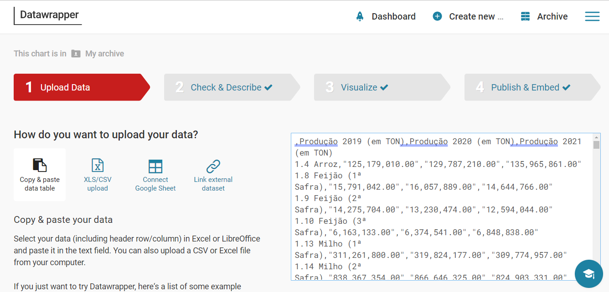

OBJETIVOS DO PROJETO:
| De que modo a pandemia afetou a produção agrícola e o produtor? | Trazer à tona o debate da importância do pequeno produtor; |
| A importância da Agricultura no PIB brasileiro; e | |
| Compartilhar os resultados obtidos! |
PROCEDIMENTOS METODOLÓGICOS:
Primeiramente, acessamos o site oficial da API do IBGE.

Já no site, acessamos as informações dos 'Dados Agregados'.

Ao fim da página, criamos um link personalizado da nossa API, via 'Query Builder', onde selecionamos a opção: 'Levantamento de Dados Sistemáticos da Produção Agrícola'. Foi gerada uma estrutura de dados em .JSON, onde realizamos a extração dos dados.
Após, criamos um script/programa em Python, onde importamos as bibliotecas necessárias.

Atrubuímos o link da API à uma variável chamada 'Dados'. Criamos outras duas variáveis: 'Linha', e 'Coluna'. Foi ali que começamos a extração dos dados da API, percorrendo suas posições e atribuíndo à variável 'Linha'. A variável 'Coluna' é uma string criada para organizarmos as informações de acordo com os produtos/alimentos escolhidos.
Finalizado, o próprio script/programa (com as bibliotecas importadas) gerou um arquivo .xlsx (planilha eletrônica) e o utilizamos para gerar as informações de gráficos no site Datawrapper.
GRÁFICOS POR ANO:
CONCLUSÃO:
O projeto demonstra, então, que a pandemia não influenciou na produção geral de alimentos, que se manteve estável durante o período da pandemia (2019-2021). Contudo, esteve diretamente ligada a instabilidade econômica causada pela alta do dólar, o que beneficiou os grandes produtores que, em sua maioria, praticam a agricultura de exportação. Por outro lado, a pandemia causou a redução do consumo de produtos no mercado interno de frutas e hortaliças, o que prejudicou o pequeno produtor responsável por ⅔ da produção.
A importância do pequeno produtor se dá, justamente, pelo fato de cultivar para o seu uso próprio ou uso para o mercado interno. Como já dito anteriormente, a alta do dólar impactou em diversos produtos produzidos pelo pequeno produtor, fazendo com que o acesso para a população ficasse cada vez menor, chegando ao ponto do consumo ser reduzido, seja por muitos dos compradores suspenderam as compras ou até mesmo o acesso aos espaços usuais de venda (feiras livres e outros) serem proibidos.
O potencial do pequeno produtor não é comparado aos grandes produtores que, como já dito também, praticam a agricultura de exportação e que, por sua vez, conseguiram se manter estáveis e se sobressaindo durante o período e aproveitando melhor essa alta do dólar.
Além disso, houve um aumento na participação da agricultura no PIB (que compõe uma parte considerável do PIB total brasileiro), devido a alta do dólar que beneficiou as exportações e os grandes produtores voltados ao mercado externo. Portanto, o projeto demonstra que a pandemia não influenciou na produção de alimentos e sim no mercado interno e externo, o que prejudicou o pequeno produtor e beneficiou o grandes produtor.